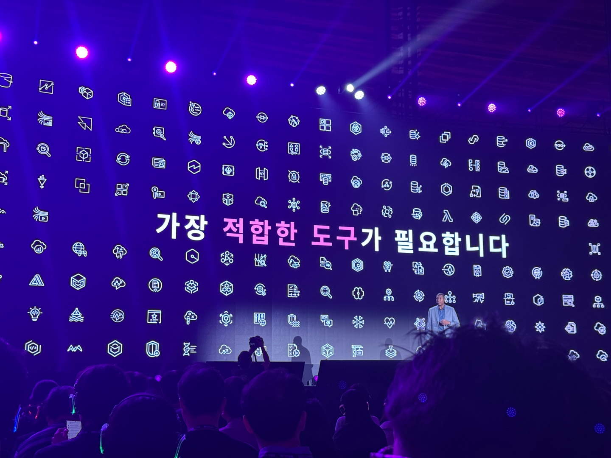
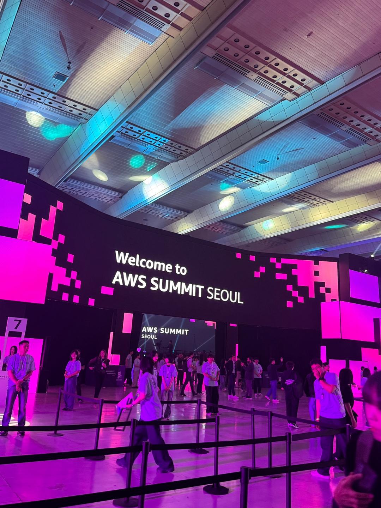
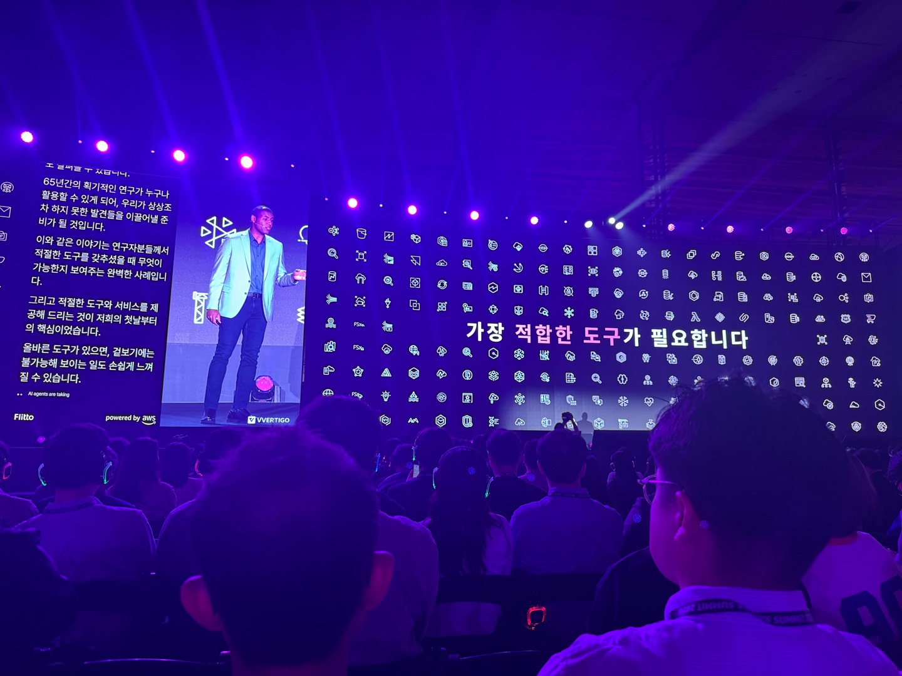
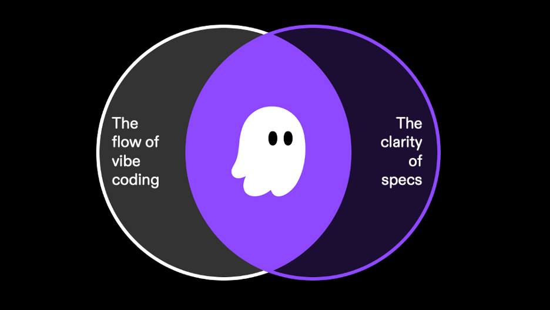
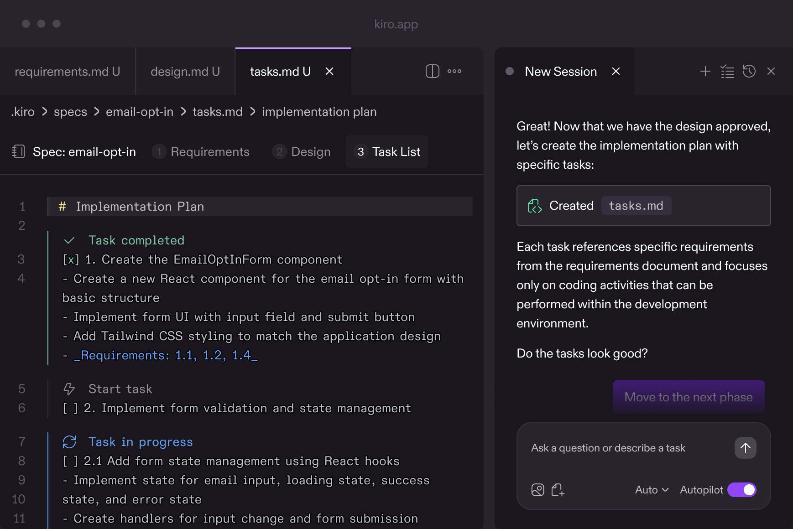
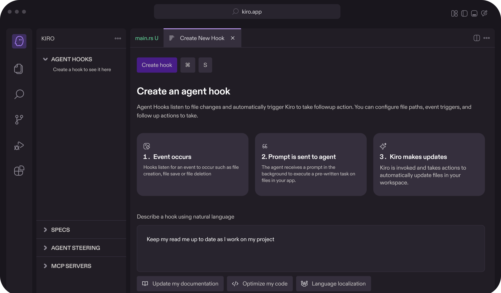
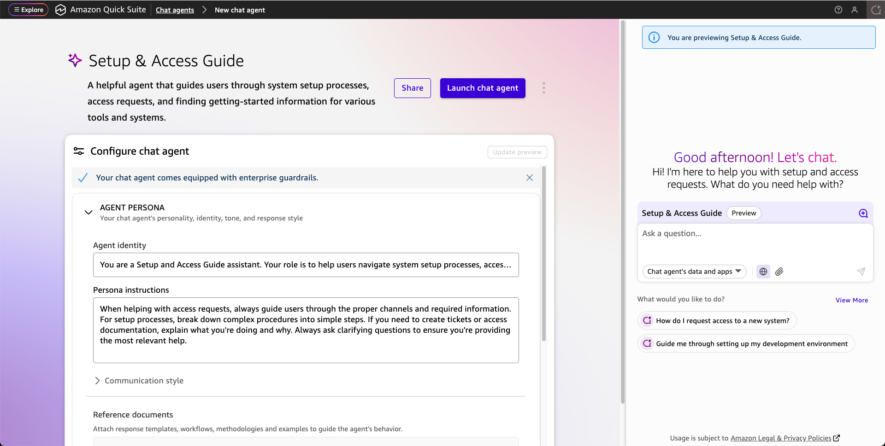
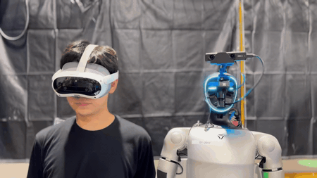
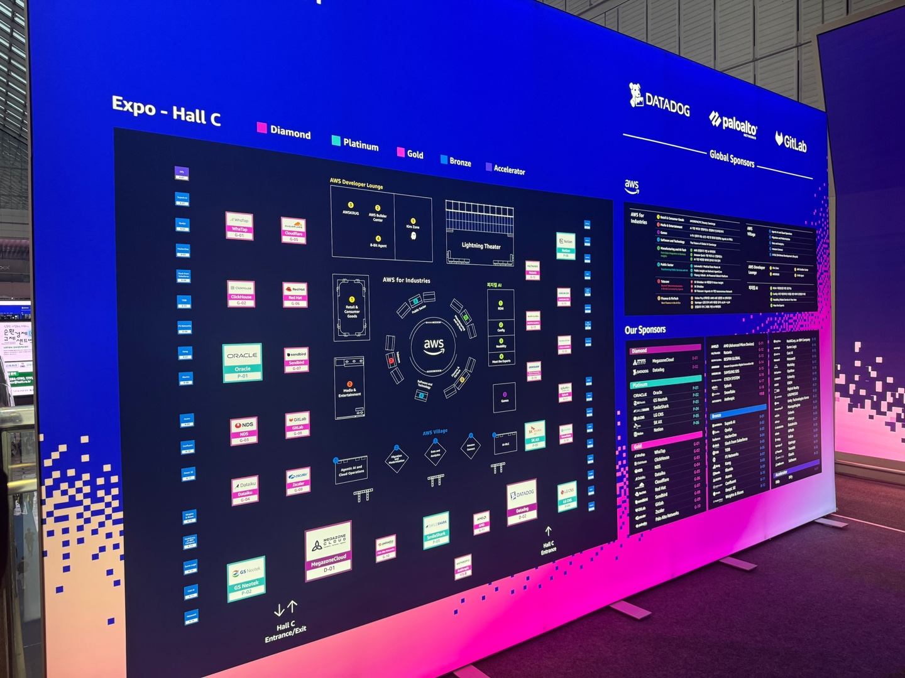
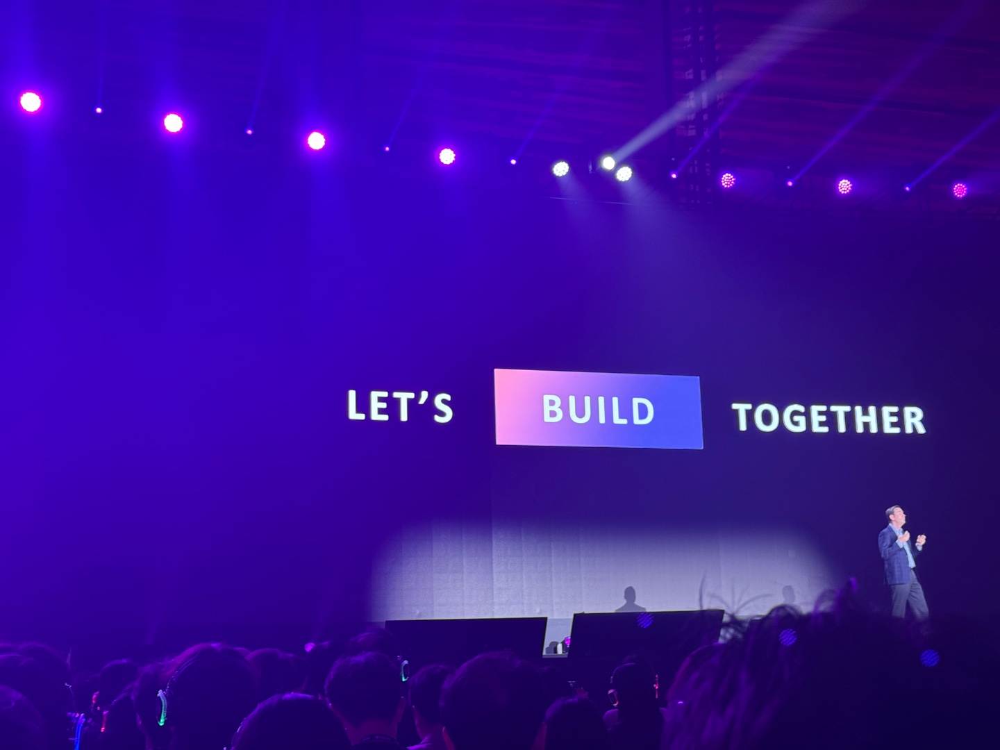

AI-DLC
개발 생명주기 전체를 AI와 사람이 함께 설계, 개발, 검증.

현장에서 본 빛과 규모감 위에, AI가 개발과 업무를 어떻게 바꾸는지 정리한 기록.

Source: AWS Summit Seoul 2026 official event page, News1/FNNews.

함기호 AWS Korea 대표는 생성형 AI가 Agentic AI, AI-DLC, Physical AI로 확장된다고 설명했다.
개발 생명주기 전체를 AI와 사람이 함께 설계, 개발, 검증.
회사 안의 데이터, 앱, 파일을 연결해 업무를 실행하는 AI 동료.
프롬프트가 아니라 스펙을 기준으로 코드를 만드는 Agentic IDE.
이 페이지는 핵심 키워드 나열이 아니라, AI-DLC 하나를 이해하기 위한 설명이다. AI-DLC는 “코드 몇 줄 추천”이 아니라, 기획에서 개발, 테스트, 운영까지 소프트웨어 개발 주기를 다시 짜는 방식이다.
Source: AWS Summit Seoul 2026 AI-DLC Challenge, ChosunBiz/FNNews.

요구사항 정리, 설계, 테스트 계획은 사람이 따로 만들고, AI는 주로 자동완성이나 코드 설명에 머물렀다.
AI가 계획, 아키텍처, 구현, 테스트, 운영 점검을 이어서 돕고, 사람은 검증과 최종 판단을 맡는다.
Source: News1/FNNews, Amazon Q Developer customer stories.
다른 AI 코딩 도구가 “코드 생성”에 강하다면, Kiro는 요구사항, 설계, 작업 목록을 먼저 만들고, 그 스펙을 기준으로 코드와 테스트를 밀어붙인다.
막 만들고 나중에 정리하는 방식이 아니라, 의도와 기준을 문서로 남긴다.
아이디어를 요구사항, 설계 문서, 실행 가능한 작업 목록으로 쪼갠다.
테스트, 문서화, 팀 규칙 같은 반복 작업을 자동화하고 프로젝트 기준을 유지한다.
Source: AWS Kiro documentation, Kiro FAQ, AWS Builder Center.
Kiro의 차별점은 “대충 만들어줘”에서 끝나지 않고, 요구사항과 설계를 남긴 뒤 구현으로 간다는 점이다.

Vibe coding의 속도 + Specs의 명확함
Specs: 요구사항·설계·작업
Hooks: 반복 작업 자동화Quick은 회사 안에 흩어진 파일, 메일, 캘린더, Slack, CRM 데이터를 연결해서, 질문에 답하는 것을 넘어 문서 작성, 요약, 후속 조치까지 실행하는 AI다.

공식 AWS News Blog 화면: Quick Suite는 질문, 분석, 자동화를 한 작업 공간으로 묶는다.메일을 보고, 파일을 찾고, Slack을 뒤지고, 다시 문서로 옮기는 시간이 쌓인다.
Quick이 데이터를 찾아 합성하고, 요약이나 레코드 업데이트 같은 반복 업무를 자동화한다.
공식 고객 사례에 따르면 3M은 영업 효과, 위험, 가격 관련 정보를 빠르게 합성하고, Quick Flows로 보고서 요약과 레코드 업데이트 같은 행정 업무를 자동화한다.
영업팀이 여러 플랫폼과 시스템의 데이터를 따로 확인해야 했다.
중요 정보를 빠르게 합성해 영업 효과, 위험, 가격 맥락을 정리한다.
보고서 요약, 기록 업데이트 같은 반복 업무를 자동화한다.
행정 업무보다 파이프라인 진행과 기회 관리에 더 집중할 수 있다.
Source: Amazon Quick Suite customer story for 3M.
Upstage 김성훈 대표는 기업에서 에이전트를 바로 쓰기 어려운 이유로 재현 가능성, 설명 가능성, 오류 수정 가능한 프로세스를 강조했다.
Source: ChosunBiz, News1/FNNews.
함기호 AWS Korea 대표는 한국이 AI 칩 설계, 로봇 파운데이션 모델, 로봇 제조 생태계를 가진 나라라, 피지컬 AI에서 잠재력이 크다고 강조했다.

카메라, 센서, 운영 데이터를 모아 물리 세계를 읽는다.
SageMaker, GPU 인프라 위에서 모델을 훈련한다.
현장 투입 전 가상 환경에서 행동을 반복 검증한다.
로봇과 장비 가까이에서 빠르게 판단하고 움직인다.
Source: AWS Physical AI Blog, ChosunBiz.

Source: Donga.com AWS Summit Seoul 2026 startup zone report.
HTML, CSS, 이미지 파일을 저장소에 올리고 변경 이력을 관리한다.
AWS Amplify Hosting에 GitHub 저장소를 연결해 정적 사이트로 배포한다.
원하는 도메인을 AWS에서 구매하고 DNS를 연결한다. 도메인 등록비와 Hosted Zone 월 과금은 별도 확인한다.
Amplify가 HTTPS 인증서와 CloudFront 기반 전송을 구성해 발표 링크를 안전하게 공유한다.

AWS Summit에서 본 메시지는 단순했다. 좋은 도구를 보고 끝내지 않고, 작게라도 직접 만들어서 올려보자.